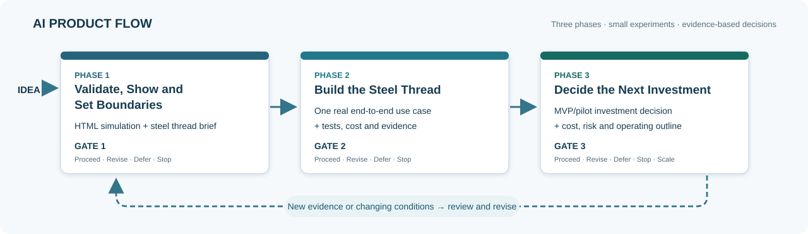

Part 1 — Understand the Approach
Why a Guide for Product Owners?
Product Owners decide whether to invest in a new product or service. In many Agile projects, teams work towards a Minimum Viable Product (MVP) before the Product Owner can clearly see what is being built. The AIPF approach brings that understanding forward.
The MVP approach reduced the risks of traditional waterfall projects, where the whole product was specified upfront. However, non-technical Product Owners can still struggle to understand or guide development until substantial work has been done. By the time they see the workflow and user interface, misunderstandings may be costly to correct.
AI agents offer a different approach. In Phase 1, they can create an interactive HTML simulation of the proposed workflow and user interface before technical development starts. The Product Owner can see what is proposed and correct misunderstandings early. More importantly, the Product Owner can decide if this ‘bet’ is worth testing further.
Phase 2 takes this further. Instead of building an MVP, the AI agent and a small team build and test a steel thread: one narrow but real end-to-end use case. Unlike approaches that build the front end and back end separately, a steel thread connects the essential parts of the product early. This exposes technical difficulties and likely costs before committing to an MVP.
AI agents enable Product Owners to run multiple small bets and invest in an MVP only when the evidence justifies it.
Start with an idea. See how it might work. Test one small part for real. Invest more only when the evidence justifies it.
This guide is for Product Owners who understand the outcome they want but may not know how to design software, choose technology, or write code. An AI agent can research, draft, simulate, build, and test; the Product Owner decides what is worth funding and accepting.
The three phases lead to three increasingly informed decisions:
- Phase 1: Try an HTML workflow and UI simulation, then decide whether to fund a steel thread.
- Phase 2: Inspect the working steel thread and test evidence, then decide whether the idea merits an MVP or pilot investment proposal.
- Phase 3: Decide whether to fund that MVP, pilot, or another experiment. The approved product is then built in small Agile increments.
The guide applies to digital products, services, research tools, campaigns, and workflows. Where HTML is not appropriate, the Phase 1 concept may be a storyboard or service walkthrough instead. Artefacts are simply useful outputs—briefs, sketches, simulations, tests, or decisions. Keep them as small as possible.
AI Product Flow at a Glance
The flow has three phases and three gates. A gate is simply a decision: has enough been learned to justify the next investment?

Figure 1. The three-phase AI Product Flow. New evidence can send the work back to an earlier phase. MVP delivery follows a separate decision, using small Agile increments.
At every gate, the Product Owner records one of these decisions:
- Proceed — there is enough evidence for the next limited investment or decision step.
- Revise — change the idea, design, or experiment and try again.
- Defer — wait for specific information or conditions.
- Stop — do not invest more; record why.
- Scale — at Gate 3 only, after appropriate real-user and operating evidence.
The record need only say what was decided, why, what remains uncertain, and what happens next.
Part 2 — How to Use the Guide
Each phase ends with a decision, not a requirement to keep building. The Product Owner gives the AI agent the intended outcome, reviews its work, and approves the next step. A small team can use the same approach. The essential checks and limits appear in each phase; detailed guidance is in Part 3.
| Phase | Main question | Main result | Decision |
|---|---|---|---|
| 1. Validate, Show, and Set Boundaries | Does the proposed experience make sense, and is a small real test worthwhile? | HTML simulation and Steel Thread Investment Brief | Fund a bounded steel thread, revise, defer, or stop |
| 2. Build the Steel Thread | Does the critical end-to-end journey work, and what did it actually cost? | Working steel thread, tests, and evidence | Prepare the next investment case, revise, defer, or stop |
| 3. Decide the Next Investment | Is the evidence strong enough to fund an MVP, pilot, or another experiment? | Updated value case, MVP/pilot proposal, risk and operating outline | Fund the next bounded step, revise, defer, or stop |
A private, reversible demonstration needs less evidence and checking than work involving payments, health information, personal data, safety decisions, or public claims.
Phase 1 — Validate, Show, and Set Boundaries
Goal: Help the Product Owner experience the proposed workflow and UI and understand the likely effort, cost, value, and risk of testing one use case for real.
The three steps below are designed to be light-touch. The Product Owner supplies the idea and corrects the AI’s assumptions. The AI agent drafts the supporting artefacts and the HTML simulation. Most artefacts can be sections in one short working brief; they do not need separate reports.
Practice: a three-step Phase 1 sequence
Step 1 — Define the idea and the primary use case
Start with a conversation, not a specification. Give the AI agent the purpose of the idea, the people it is for, and one outcome those people should achieve.
Essential artefacts:
| Artefact | What it contains | Who prepares it |
|---|---|---|
| Product Intent | Problem, intended benefit, target users, key limits, and what would make the idea worthwhile | Owner describes; AI drafts; owner approves |
| Lightweight Persona | One representative user, their goal, situation, and constraints; clearly labelled as assumed until checked | AI drafts; owner corrects |
| Primary Use Case | Trigger, user’s main steps, expected result, and one situation where things go wrong | AI drafts; owner confirms |
| Assumption and Evidence Map | The 2–3 claims most likely to make the idea fail; what evidence exists; the cheapest way to test each | AI challenges; owner prioritises |
A persona can be a few sentences. A use case can be a short list. Neither needs a lengthy workshop. The AI should mark missing information as unknown, not invent it. Where the bet depends on real customer demand, use whatever direct evidence is available or plan a small user check.
Step 1 output: One agreed use case and enough context to describe its workflow.
Step 2 — Sketch the workflow and intended UI
Ask the AI agent to work backwards from the result the user wants. Keep only the steps needed for the primary use case.
Essential artefacts:
| Artefact / technique | What it answers |
|---|---|
| User Story Map (small) | What does the user do, in what order, and which actions belong in the first slice? |
| Workflow Sketch | Where does the journey start, what decisions are made, and what happens on success or failure? |
| UI Sketch / Storyboard | What must the user see, enter, choose, and receive on each screen? |
A lightweight Value Stream Map is useful only if the product changes an existing process: it can show delays, handoffs, repeated work, and where value is lost. It is not required for every new product. Use story splitting to remove optional functions and keep the smallest understandable journey.
The Product Owner reviews the flow before the agent builds the HTML demonstration. This is the simplest point to correct a misunderstanding.
Step 2 output: A short, approved workflow and screen outline for the HTML demonstration.
Step 3 — Build the HTML simulation and prepare the steel thread decision
The agent builds a single, self-contained .html file using HTML, CSS, JavaScript, sample data, and simulated behaviour. It should be easy for the Product Owner to open in a browser. It does not need a server, database, paid service, real AI integration, or production-quality code.
The simulation must let the Product Owner:
- follow the main use case from start to finish;
- click through the main screens, choices, inputs, and outcomes;
- experience at least one failure or unusual situation;
- see what is simulated rather than actually working; and
- judge whether the workflow feels useful and understandable.
The agent checks that the file opens and the main interactions work. It then presents the simulation for the Product Owner to try. The owner can ask for quick changes, but should avoid turning the simulation into an MVP. The agent must work within agreed access, spending, and safety limits.
The agent also prepares a Steel Thread Investment Brief. This is a short, evidence-labelled proposal, not a detailed business plan:
| Decision item | Minimum information |
|---|---|
| Value and evidence | Who benefits, how, and what evidence supports that view; what still needs testing with real users |
| The proposed steel thread | The one end-to-end use case to make real; what will be excluded |
| How it could be built | Proposed technology stack, AI tools, essential data and integrations, and a simpler alternative where relevant |
| Small business case | Rough costs and effort for the experiment (people, AI usage, services, setup, contingency) compared with the potential benefit and cost of doing nothing |
| Risks and feasibility | Critical technical, usability, privacy, security, legal, or ongoing-cost uncertainties; what remains unproven |
| Experiment rules | Time and spending limits, who does the work, the checks, success criteria, stop conditions, and decision date |
Cost figures should be ranges with clear assumptions, not invented precision. The brief should distinguish the cost of testing the steel thread from the unknown larger cost of an MVP and ongoing operation. Where the technology or costs are uncertain, the proposed experiment should test them.
Suggested AI agent task instruction:
Use the Product Owners AI Guide, the approved Product Intent, persona, use case, assumptions, and workflow sketch as your context. Create one interactive HTML simulation with mock data, a complete main journey, and one failure path. Label simulated features. Do not connect real accounts or start building the steel thread. Then produce a short Steel Thread Investment Brief covering the smallest real end-to-end test, a possible technology stack, cost and time ranges, risks, acceptance criteria, and stop conditions. List assumptions and missing evidence clearly. Present both outputs to the Product Owner for a decision.
Step 3 output: A browser-ready HTML simulation, a short investment brief, and a list of open questions or assumptions.
Practice: Phase 1 quality control
Before Gate 1, the Product Owner should be able to answer:
- Who is this for, what problem does it solve, and why might it matter?
- Can I use the HTML simulation to understand the proposed workflow and UI?
- Are the most important assumptions visible, including which ones have no real-world evidence?
- What one end-to-end use case will the steel thread prove?
- Do I understand the proposed technology, likely cost range, major risks, and investment limit?
- What observation or failed test would make us change course or stop?
- Have the simulation and investment brief been reviewed, not merely generated?
If the Product Owner cannot answer a material question, the agent should show the gap and offer the cheapest useful next check.
Gate 1 — Decide whether to build a steel thread. Review the HTML simulation, Product Intent and assumptions, and Steel Thread Investment Brief. Record Proceed, Revise, Defer, or Stop. Proceed means approving a small experiment within agreed limits, not approving an MVP or full product build.
Phase 2 — Build the Steel Thread
Goal: Find out whether the most important part of the proposed product can actually work, end to end, at a cost and risk worth taking further.
A steel thread is the narrowest realistic path through all the parts needed for one result. Unlike the Phase 1 HTML simulation, it performs the critical work for real (or uses an explicitly justified representative test environment). It is not yet an MVP and does not need to support every intended user or feature.
The Product Owner normally does not need to supply a new specification. The agent starts from the approved Phase 1 artefacts and turns them into a build-and-test brief.
Essential Phase 2 artefacts:
| Artefact | What the Product Owner needs to know |
|---|---|
| Steel Thread Build Brief | The approved use case, scope exclusions, technology stack, agent/team roles, budget cap, and timebox |
| Acceptance Examples | A few plain-language examples of what should happen on success, bad input, and failure (often written as Given–When–Then) |
| Technical Sketch | The minimum components, data, external connections, and permissions needed to run the real journey |
| AI Model Harness | What agents may change or access, how outputs are checked, when work must stop, and who accepts results |
| Working Steel Thread and Test Evidence | A demonstrated end-to-end result, test outcomes, failures, actual effort/cost, and unresolved risks |
| Learning and Decision Record | What the team learned and the decision now required |
Practice: build and test in small increments
- Agree the tests first. Use a brief Three Amigos discussion (Product Owner, builder, and tester roles; AI can perform the latter two) and a few concrete examples. Choose checks that can fail, not just demonstrations that look successful.
- Choose the smallest technical path. Prefer existing services and simple components. Run a short spike—a time-limited investigation—only when a critical technical question cannot be answered otherwise.
- Build one slice at a time. The agent can use test-driven development: write a check, implement the minimum needed to pass, then improve safely. Use automated checks and version control where useful.
- Show working results often. Compare them with the Phase 1 workflow and acceptance examples. Keep the failure path and recovery in scope.
- Report what happened. Record actual costs, working integrations, test failures, user observations, unresolved issues, and any change to the original business case.
Who runs the checks? An AI agent or automated testing tool can run them; a second employee is not always necessary. The Product Owner approves the acceptance criteria and important risk limits. Use independent evidence for consequential claims. Deliberately include a known error or unsupported assumption in a safe test to check that the harness detects it and stops dependent work. Fix checks that miss it; one successful test does not prove that all errors will be caught.
Stop or escalate when purpose changes, cost limits are reached, sensitive information is at risk, an important check fails, or a choice exceeds the agreed scope. The agent may fix ordinary technical defects within scope and rerun tests; the Product Owner decides changes to purpose, money, risk, or direction.
Practice: Phase 2 quality control
Before Gate 2, ask:
- Did the selected use case work from beginning to end, including the critical real integration or activity?
- What did the tests show about normal use, errors, and recovery?
- Which assumptions were confirmed, challenged, or left unanswered?
- What did it actually cost in time, AI usage, services, and people?
- What do real users or relevant stakeholders think, if their evidence is needed?
- Do the security, privacy, operating, and maintenance risks still look manageable?
- Is there enough evidence to justify the next limited investment, rather than simply continuing because code now exists?
Gate 2 — Decide whether the steel thread has earned the next decision. The Product Owner reviews the working steel thread, test results, actual costs, and unresolved risks. Record Proceed, Revise, Defer, or Stop. Proceed means the evidence is strong enough to prepare an MVP or pilot investment decision in Phase 3. It does not authorise building an MVP or scaling the product.
Phase 3 — Decide the Next Investment
Goal: Decide whether to fund an MVP, a limited pilot, another small experiment, or no further work, using the evidence gained from the steel thread.
Phase 3 is an investment decision, not the stage where the MVP is built. The Product Owner now has a proposed user experience from Phase 1 and evidence of technical feasibility, cost, and risk from Phase 2. The AI agent and small team use this evidence to propose the next investment and explain what remains uncertain.
Essential Phase 3 artefacts:
| Artefact | What the Product Owner needs to know |
|---|---|
| Updated Product and Value Case | What the steel thread and any real-user checks revealed about the need, benefits, alternatives, and likely value |
| MVP or Pilot Investment Brief | The smallest useful next release or experiment, scope exclusions, expected effort and costs, team and AI roles, and decision criteria |
| Delivery and Operating Outline | How the MVP could be built in small increments and what hosting, support, security, privacy, maintenance, recovery, and running costs it may require |
| Evidence and Risk Summary | What the steel thread proved, what failed, what is still assumed, and which risks must be resolved before real use |
| Acceptance and Learning Record | The decision, investment limit, responsible owner, next review, and evidence that would change the decision |
The Product Owner does not need a detailed product specification. The agent should recommend a bounded next step, show credible alternatives, and use cost ranges that state their assumptions. Where real-user demand, security, or operating costs remain uncertain, the next investment should test those questions rather than assume they are solved.
Practice: Phase 3 quality control
Before Gate 3, ask:
- What did the real steel thread prove, and what does it not prove?
- Is there credible evidence that intended users need or value the product, or is that still a test for the MVP?
- What is the smallest MVP, pilot, or further experiment worth funding?
- What would it cost to build and operate, and how reliable are those estimates?
- Who will carry out the work, run the checks, and handle future support and security?
- What risks, spending limits, success criteria, and stop conditions will apply?
- Is the Product Owner satisfied that the next investment is justified by the evidence?
Gate 3 — Decide the next investment. Record Proceed, Revise, Defer, or Stop. Proceed authorises only the agreed MVP, pilot, or further experiment within stated limits. Scale is an option at Gate 3 only when real-user and operating evidence—not just a steel thread—supports wider use.
What happens after Gate 3? If an MVP is approved, the team builds and tests it through small Agile increments, with frequent demonstrations and acceptance checks. Those increments are not part of Phase 3 itself. Return to the relevant phase or gate when new evidence, cost, risk, or user feedback changes the decision. Before a pilot or wider release, check that the product can be operated, supported, secured, and recovered at a level appropriate to its use.
Essential Artefacts Across the Phases
This table summarises what is produced, reviewed, and reused. Create does not mean “write a long report”; most artefacts can be brief or combined.
| Artefact | Phase 1 | Gate 1 | Phase 2 | Gate 2 | Phase 3 | Gate 3 |
|---|---|---|---|---|---|---|
| Product Intent (including persona and use case) | Create in Step 1 | Review | Update if needed | Review changes | Update | Review |
| Assumption and Evidence Map | Create in Step 1 | Review | Test and update | Review evidence | Update | Review |
| Concept Artefact (workflow sketch and HTML simulation) | Create in Steps 2–3 | Try and review | Use as a reference | — | — | — |
| Roadmap Options / Steel Thread Investment Brief | Create in Step 3 | Decide on investment | Update actual effort and choices | Review findings | Update value case | Decide investment |
| AI Model Harness | Set initial limits in Step 3 | Approve limits | Run and test checks | Review failures | Maintain | Review |
| Steel Thread | Define and cost in Step 3 | Approve scope | Build and test | Demonstrate | Use to plan next investment | Review |
| Acceptance Record | Prepare | Record decision | Update evidence | Record decision | Prepare investment choice | Record decision |
| Learning Record | Start | Review | Update | Review | Update | Review |